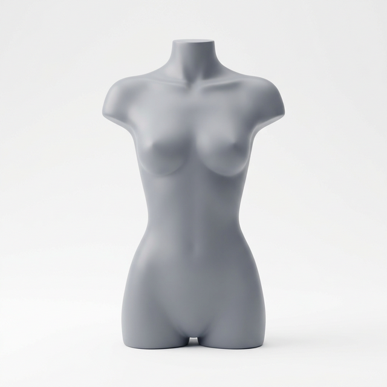
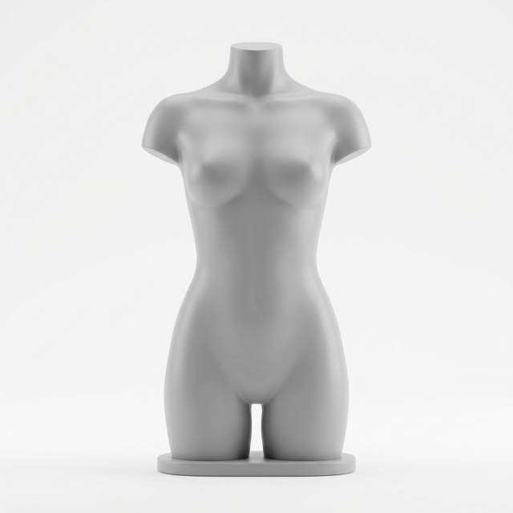
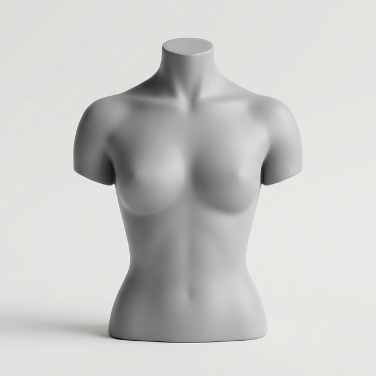
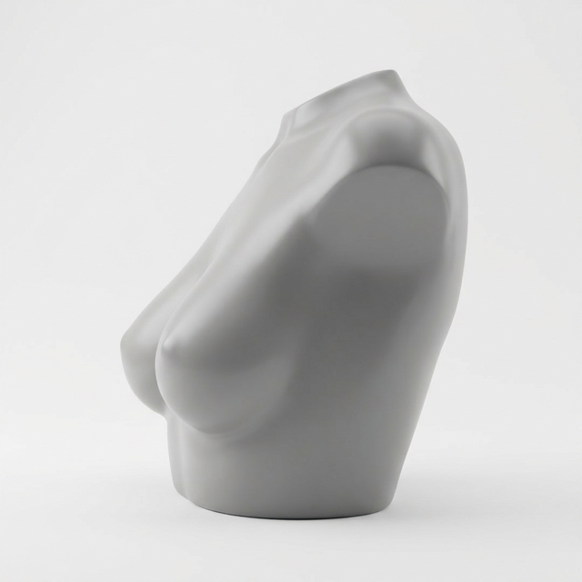
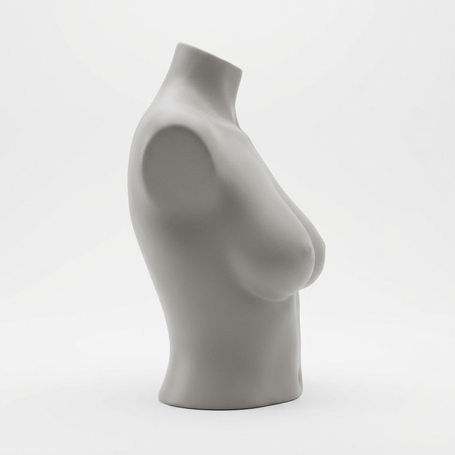
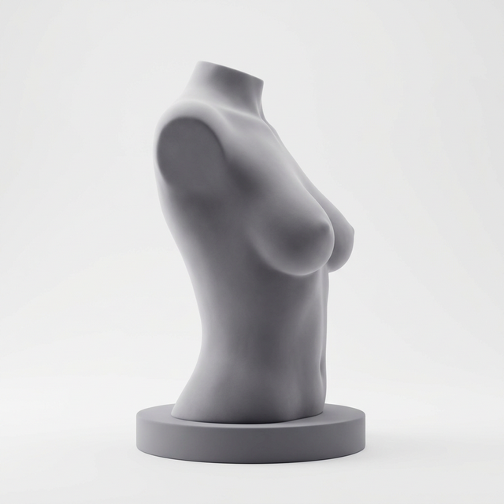
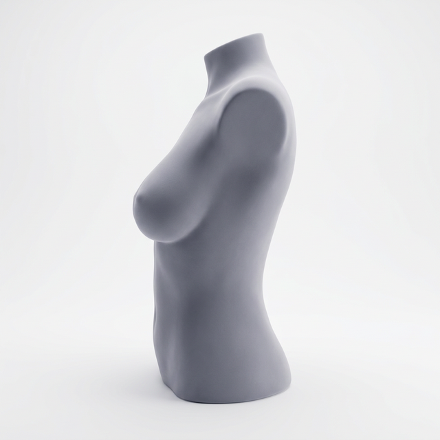

PENTI FIT STUDIO
Bedeninizi Bulalım
Mezuraya gerek yok. Formunuza göre size en uygun sütyen bedenini bulmak için birkaç sorumuzu yanıtlayın.
Sırt & Göğüs Çevresi
Sürtünmeyi minimize etmek ve doğru destek sağlamak için kemik yapınız önemlidir. Size hangisi daha çok uyuyor?

Dar / İnce
Omuzlar ve sırt görece daha dardır.

Normal / Orantılı
Standart omuz genişliğine sahiptir.

Geniş / Atletik
Sırt daha geniştir veya omuzlar geniştir.
Mezura ile ölçüm yaptıysanız, sonuçlarınızı aşağıya girin. Bu bilgi, görsel seçiminizin yerine geçecektir.
📖 Nasıl Ölçülür?
Bant (Underbust)
Desteksiz veya desteksiz ince bir sütyen giyin. Mezurayı göğüslerin hemen altına, kaburga hizasına sarın. Mezura sırtınızda düz olmalı, koltuk altlarından geçmeli ve göğüslerinizin birleştiği noktada buluşmalıdır. Nefes alıp verin; rahat ama sıkı bir ölçüm alın.
Bust (Overbust)
Aynı sütyen ile mezurayı göğüslerin en dolgun noktasından geçirin. Mezura sırtınızda bant hizasında düz kalmalıdır. Kollarınız aşağıda olmalı, mezura vücuttan ayrılmamalıdır. Nefes alıp verin; mezuranın kendi rahat konumuna oturmasını bekleyin.
💡 İpucu: Aynanın önünde ölçüm yaparak mezuranın sırtınızda düz kaldığından emin olun.
Mevcut Deneyim
Şu anda kullandığınız favori günlük sütyeninizde nasıl bir his var?
Göğüs Formu
Doğru kalıbı ve cup hacmini bulmak için hacim dağılımını seçin.

Sığ (Shallow)
Üst kısımdaki hacim daha azdır, yumuşak bir eğime sahiptir.

Damla (Teardrop)
Dolgunluk daha çok alt kısımdadır.

Yuvarlak
Hacim üstte ve altta eşit olarak dağılmıştır.

Çan Şekli
Dolgunluk alt kısımda fazladır, görece daha ağırdır.
Beden Tercihi
İki beden arasında kalırsak, nasıl bir hissi tercih edersiniz?
Bedeniniz Hesaplanıyor...
Algoritma yanıtlarınızı değerlendiriyor
İDEAL BEDENİNİZ
Ağırlık dengeniz ve konfor tercihiniz göz önüne alındığında, 75 bandı ve C cup hacmi size en uygun tutuşu sağlayacaktır.
Alternatif (Sister Size)
Daha fazla destek isterseniz, 80B bedeni aynı cup hacmini farklı bir bant genişliğiyle sunar.